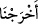
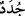
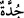
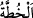
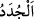
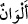
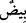
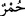

ortaya koymak içindir. Çünkü bu Allah Teâlâ’nın kudret ve hikmetinin kemâlini bildiren
hârika bir sanattır. Bir de böyle “biz çıkardık” şeklinde azamet nûnu () ile ifâde
etmek daha heybetli ve daha haşmetlidir.
Kâşifî der ki: “Mütekellim birinci şahıs sıygasına dönülmesi, fiili tahsîs amacıyladır.
Yâni “Biz onunla su çıkartmaya muktediriz.”
Nar, elma, incir, üzüm ve diğer meyve cinsleri yahut sınıfları muhteliftir. Zira bu
meyvelerin kendi aralarında muhtelif sınıfları vardır. Meselâ üzümün elliden, hurmanın
yüzden fazla çeşidi vardır. Yahut sarı, kırmızı, yeşil, beyaz, siyah ve başka renklerde
görünüşleri muhteliftir.
“Dağlardan (geçen) beyaz, kırmızı, değişik renklerde ve simsiyah yollar (yaptık).”
“ ismi “ kelimesinin çoğuludur. Dağda yahut başka yerlerdeki farklı renklerde
yollar demektir. Merkebin sırtında merkebin renginden farklı çizgiye “ denilir.
Bazen geyik ve ceylanda sırt ve karın renklerini ayıran iki misk yolu olur. Bu yolların
doğrudan dağlardan olduğuna hükmetmek sahih olmayınca mübtedâ için bir muzaf takdir
etmeye ihtiyaç olmuştur. Yâni dağlardan dağların rengine muhâlif muhtelif renklerde
yolları olanlar vardır. Sonuçta bu ifâde “muhtelif renklerde dağlar vardır” demektir. Bu
durumda Peygamberimiz (s.a.) bu üç karîneyi okumuş oldu. Zira bundan önce “Onunla
renkleri çeşit çeşit meyveler çıkardık” ifâdesi, ondan sonra da “İnsanlardan,
hayvanlardan ve davarlardan da yine böyle türlü renkte olanlar var” ifâdesi yer
almaktadır. Mânânın bu noktaya gelmesi için bu ikisi arasındaki karînede bir hazfin
bulunması gerekir. İşte bu suretle tüm karîneler arasında bir uyum sağlanmış oldu.
Müfredat’da der ki, “cüdde” açıkça görünen yol demektir. Tutulmuş, kat’edilmiş yol
anlamına gelen “tarîkun mecdûd” ifâdesinden gelmektedir. Celâleyn’de der ki, dağlarda
olan yollar vücuddaki damarlar gibidir. Keşfü’l-esrâr’da der ki: “Dağlarda geçenler,
yürüyenler sebebiyle yollar açıldı; beyaz ve kırmızı dağlarda beyaz ve kırmızı
hatlar/yollar (var).” Burada Keşfü’l-esrâr sahibi “ kelimesini girilip gidilen
yollar mânâsına hamletmiştir. Zâhir olan birinci mânâdır. Yâni muhtelif yollar
olduğudur. Çünkü burada makam halkî, yâni fıtrî ve yaratma eseri olan değişikliği beyan
etmektir. Yolun beyaz olması dağın beyaz olmasını gerektirmez. Çünkü dağların
birbirine muhâlif ve muhtelif damarları vardır. Bu durumun aksi de böyledir. Yâni dağın
beyaz olması yolun beyaz olmasını gerektirmez. Bu yollardan dağın rengine uyan da
vardır uymayan da.
Bu beyaz ve kırmızı yolların renklerinin bazısı koyu, bazısı açık olabilir. Bu renkler
kendi içlerinde de koyu ve açık olarak değişik tonlardadır. Nice beyaz vardır ki diğer
beyazdan daha parlaktır. Ve yine nice kırmızı vardır ki diğer kırmızıdan daha koyudur.
Sırf ve saf beyaz bile kendi arasında değişiklik arzeder. Elbette bizzat kırmızı ve
kırmızılık da böyledir. Bundan dolayı renkler anlamına gelen “ lafzı, “ ve “ lâfızlarından her birinin zamirine muzâf olarak çoğul yapılmıştır. Buna göre beyaz ve
kırmızıdan her biri küllî müşekkik[75] kabilinden olur.